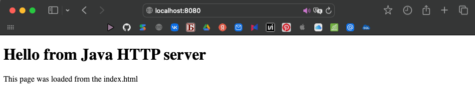

Задание 3 - Раздача HTML-страницы по HTTP
Задача
Серверная часть приложения: клиент подключается к серверу, сервер отдаёт HTTP-сообщение с HTML-страницей, загруженной из файла index.html
Теория
HTTP-ответ — обычный текст по строгому формату: строка статуса, заголовки, пустая строка, тело
Код сервера
package task3;
import java.io.BufferedReader;
import java.io.IOException;
import java.io.InputStreamReader;
import java.io.OutputStream;
import java.net.ServerSocket;
import java.net.Socket;
import java.nio.file.Files;
import java.nio.file.Path;
public class HTTPServer {
public static void main(String[] args) throws IOException {
int PORT = 8080;
ServerSocket serverSocket = new ServerSocket(PORT);
System.out.println("HTTP server at http://localhost:8080");
while (true){
Socket clientSocket = serverSocket.accept();
BufferedReader input = new BufferedReader(new InputStreamReader(clientSocket.getInputStream(), "UTF-8"));
String request = input.readLine();
System.out.println("Request: " + request);
byte[] body = Files.readAllBytes(Path.of("students/k3339/Tolstukhina_Ksenia/Lr1/src/task3/index.html"));
String response =
"HTTP/1.1 200 OK\r\n" +
"Content-Type: text/html; charset=UTF-8\r\n" +
"Content-Length: " + body.length + "\r\n" +
"Connection: close\r\n" +
"\r\n";
OutputStream output = clientSocket.getOutputStream();
output.write(response.getBytes("UTF-8"));
output.write(body);
output.flush();
clientSocket.close();
}
}
}
HTML-страница index.html
<!DOCTYPE html>
<html lang="en">
<head>
<meta charset="UTF-8">
<title>Laboratory work</title>
</head>
<body>
<h1>Hello from Java HTTP server</h1>
<p>This page was loaded from the index.html</p>
</body>
</html>
Запуск
java -cp out task3.HTTPServer
И открыть в браузере http://localhost:8080
Пример
